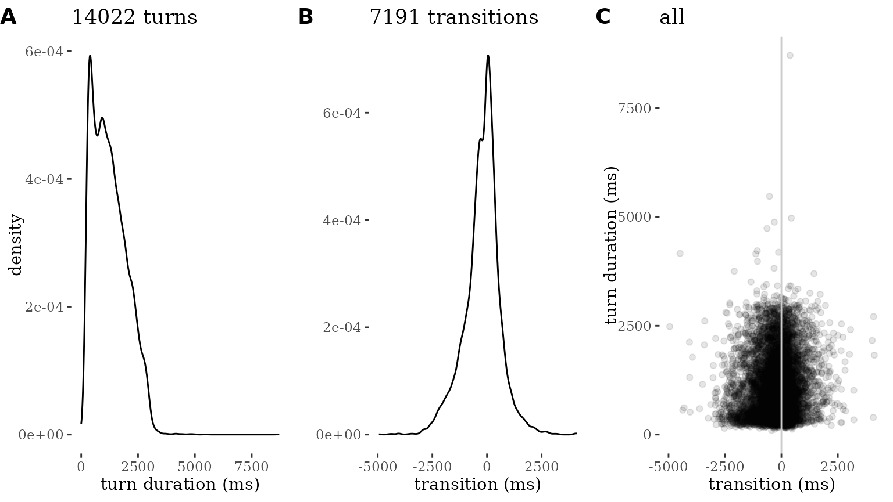
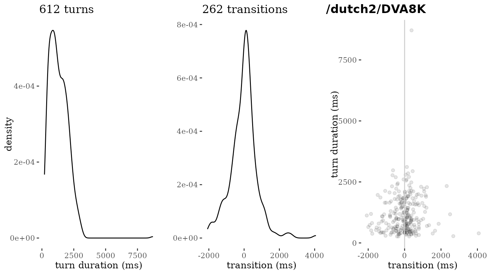
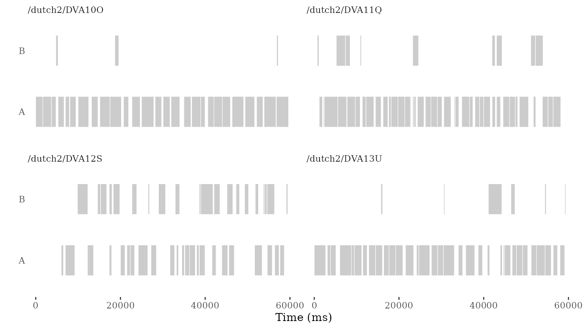
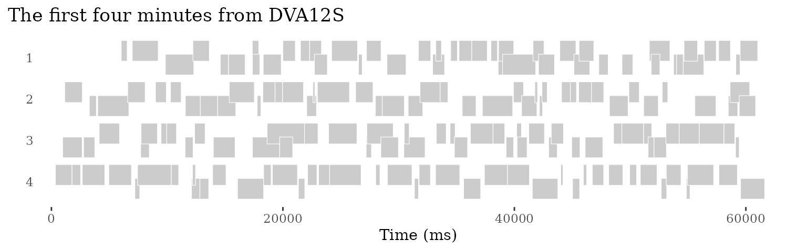
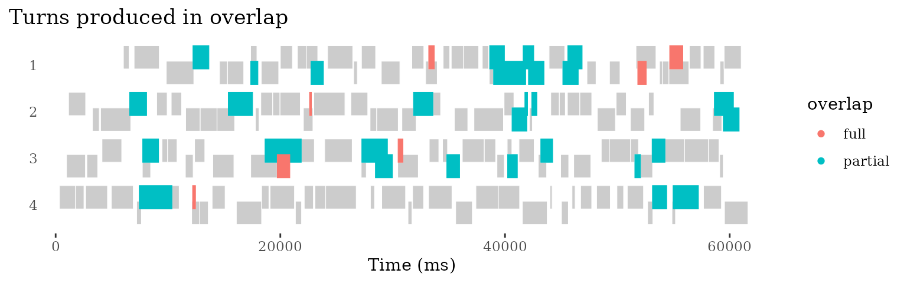
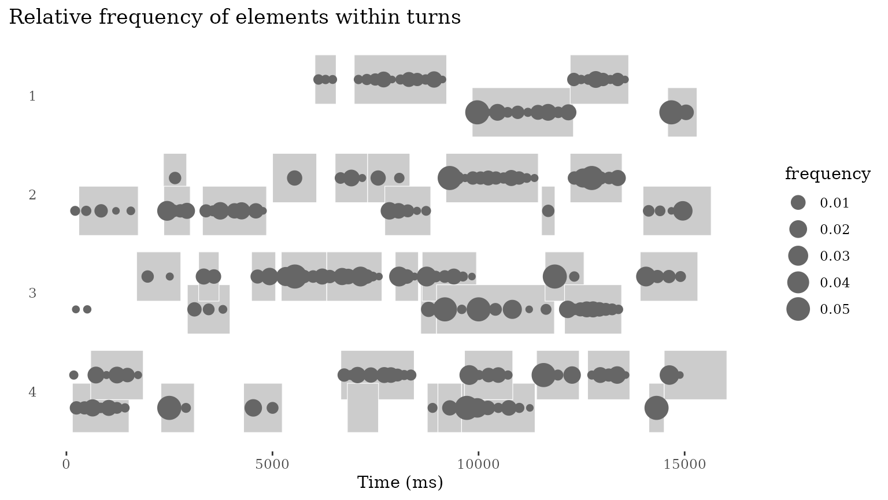
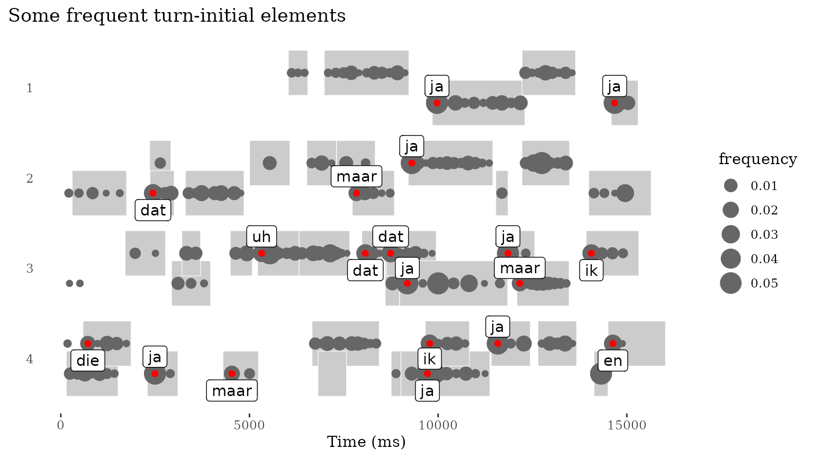

Basic workflows for talkr
workflows.Rmd
library(talkr)Loading some data
We will be using the IFADV corpus as example data for the workflow of
talkr. This is a corpus consisting of 20 dyadic
conversations in Dutch, published by the Nederlandse Taalunie in 2007
(source)
The snippet below initializes the talkr dataset using the ifadv data. For more information about the IFADV dataset, see the repository link.
data <- init(ifadv::ifadv)
#> Warning in init(ifadv::ifadv): Column 'uid' already exists in the dataset. This
#> column will be renamed to `original_uid`.Essential to any talkr workflow is a minimal set of data
fields. These are the following:
-
source: the source conversation (a corpus can consist of multiple sources) -
begin: begin time (in ms) of an utterance -
end: end time (in ms) of an utterance -
utterance: content of an utterance -
participant: the person who produced the utterance
The init() function takes these minimal fields and
generates a uid: a unique identifier at utterance-level
that can be used as a reference to select and filter specific
utterances.
The init() function can be used to rename columns if
necessary. For example, if the column participant is named
speaker, we can rename it as follows:
talkr_data <- init(data,
participant = "speaker")A dataset can contain additional fields. For instance, the IFADV
sample dataset also contain language (which is Dutch) and
utterance_raw (a fuller, less processed version of the
utterance content). It also contains measures related to turn-taking and
timing, including FTO (floor transfer offset, the offset
between current turn and that of a prior participant, in milliseconds)
and freq and rank, frequency measures of the
utterance content.
Workflow 1: Quality control
Summary statistics
The report_stats function provides a simple summary of a
dataset, including the total number of utterances, the total duration of
the conversation, the number of participants, and the number of
sources.
report_stats(data)
#> ### Corpus-level statistics
#>
#> nr of sources: 20
#> nr of participants: 40
#> nr of turns: 14022
#> mean turn duration (ms): 1257
#> turns per hour: 2806
#> total recording (min): 299.9
#> total recording (hours): 5
#> total speaking time (min): 293.8
#> total speaking time (hours): 4.9
#>
#> ### Conversation-level statistics (per source)
#>
#> |source | nr of participants| total recording (ms)| total recording (min)| total speaking time (ms)| total speaking time (min)|
#> |:---------------|------------------:|--------------------:|---------------------:|------------------------:|-------------------------:|
#> |/dutch2/DVA10O | 2| 899341| 15| 829140| 13.8|
#> |/dutch2/DVA11Q | 2| 899061| 15| 884734| 14.7|
#> |/dutch2/DVA12S | 2| 900000| 15| 785323| 13.1|
#> |/dutch2/DVA13U | 2| 900000| 15| 877328| 14.6|
#> |/dutch2/DVA14W | 2| 900000| 15| 796924| 13.3|
#> |/dutch2/DVA15Y | 2| 899379| 15| 1032776| 17.2|
#> |/dutch2/DVA16AA | 2| 900000| 15| 974312| 16.2|
#> |/dutch2/DVA17AC | 2| 899961| 15| 885257| 14.8|
#> |/dutch2/DVA19AG | 2| 899236| 15| 788268| 13.1|
#> |/dutch2/DVA1A | 2| 899538| 15| 879384| 14.7|
#> |/dutch2/DVA20AI | 2| 899145| 15| 918466| 15.3|
#> |/dutch2/DVA22AL | 2| 899838| 15| 879580| 14.7|
#> |/dutch2/DVA24AK | 2| 900000| 15| 887106| 14.8|
#> |/dutch2/DVA2C | 2| 899635| 15| 1097376| 18.3|
#> |/dutch2/DVA3E | 2| 899091| 15| 851393| 14.2|
#> |/dutch2/DVA4C | 2| 899108| 15| 850314| 14.2|
#> |/dutch2/DVA6H | 2| 899981| 15| 889722| 14.8|
#> |/dutch2/DVA7B | 2| 899664| 15| 913682| 15.2|
#> |/dutch2/DVA8K | 2| 900000| 15| 807418| 13.5|
#> |/dutch2/DVA9M | 2| 899773| 15| 802054| 13.4|
#>
#> ### Turn statistics (per source)
#>
#> |source | nr of turns| mean turn duration (ms)| shortest turn (ms)| longest turn (ms)| turns per hour|
#> |:---------------|-----------:|-----------------------:|------------------:|-----------------:|--------------:|
#> |/dutch2/DVA10O | 501| 1655| 233| 3001| 2005|
#> |/dutch2/DVA11Q | 792| 1117| 124| 4188| 3171|
#> |/dutch2/DVA12S | 640| 1227| 173| 3819| 2560|
#> |/dutch2/DVA13U | 717| 1224| 196| 3173| 2868|
#> |/dutch2/DVA14W | 721| 1105| 97| 3115| 2884|
#> |/dutch2/DVA15Y | 770| 1341| 154| 4973| 3082|
#> |/dutch2/DVA16AA | 604| 1613| 292| 3447| 2416|
#> |/dutch2/DVA17AC | 782| 1132| 0| 3453| 3128|
#> |/dutch2/DVA19AG | 648| 1216| 136| 2988| 2594|
#> |/dutch2/DVA1A | 681| 1291| 143| 3417| 2725|
#> |/dutch2/DVA20AI | 758| 1212| 167| 5472| 3035|
#> |/dutch2/DVA22AL | 745| 1181| 143| 3448| 2981|
#> |/dutch2/DVA24AK | 685| 1295| 121| 4421| 2740|
#> |/dutch2/DVA2C | 765| 1434| 217| 3415| 3061|
#> |/dutch2/DVA3E | 753| 1131| 175| 3199| 3015|
#> |/dutch2/DVA4C | 719| 1183| 145| 3697| 2879|
#> |/dutch2/DVA6H | 683| 1303| 122| 4786| 2732|
#> |/dutch2/DVA7B | 691| 1322| 197| 3395| 2765|
#> |/dutch2/DVA8K | 612| 1319| 200| 8712| 2448|
#> |/dutch2/DVA9M | 755| 1062| 163| 2909| 3021|Visual quality checks
The plot_quality function provides a visual check of the
nature of the data, by visualizing the distribution of turn durations,
and transition timing.
Transition timing is similar to FTO, but calculated without additional quality checks: transitions are identified when the participant changes from one turn to the next. The transition time is then calculated as the difference between the beginning of the turn of the new participant, and the end of the turn of the previous one.
By default, plot_quality() will plot the entire
dataset:
plot_quality(data)
Quality plots can also be run for a specific source:
plot_quality(data, source = "/dutch2/DVA8K")
A quality plot consists of three separate visualizations, all designed to allow rapid visual inspection and spotting oddities:
A density plot of turn durations. This is normally expected to look like a distribution that has a peak around 2000ms (2 seconds) and maximum lengths that do not far exceed 10000ms (10 seconds) (Liesenfeld & Dingemanse 2022). The goal of this plot is to allow eyeballing of oddities like turns of extreme durations or sets of turns with the exact same duration (unlikely in carefully segmented conversational data).
A density plot of turn transition times. A plot like this is expected to look like a normal distribution centered around 0-200ms (Stivers et al. 2009). Deviations from this may signal problems in the dataset, for instance due to imprecise or automated annotation methods.
A scatterplot of turn transition (x) by turn duration (y). This combines both distributions and is expected to look like a cloud of datapoints that is thickest in the middle region. Any standout patterns (for instance, turns whose duration is equal to their transition time) are indicative of problems in the segmentation or timing data.
Each of the three plots can also be generated separately:
plot_density(data, colname="duration", title="Turn durations",xlab="duration (ms)")
plot_density(data, colname="FTO", title="Turn transitions (FTO)",xlab="FTO (ms)")
plot_scatter(data, colname_x="FTO",colname_y="duration",title="Turn transitions and durations",xlab="transition (ms)", ylab="duration (ms)")Workflow 2: Plot conversations
Another key use of talkr is to visualize conversational
patterns. A first way to do so is geom_turn(), a
ggplot2-compatible geom that visualizes the timing and duration of turns
in a conversation.
We can start by simply visualizing some of the conversations in the
dataset. Here we sample the first four and plot the first minute of
each. We display them together using facet_wrap() by
source.
library(ggplot2)
library(dplyr)
#>
#> Attaching package: 'dplyr'
#> The following objects are masked from 'package:stats':
#>
#> filter, lag
#> The following objects are masked from 'package:base':
#>
#> intersect, setdiff, setequal, union
# we simplify participant names
conv <- data |>
group_by(source) |>
mutate(participant = as.character(factor(participant, labels=c("A","B"),ordered=T)))
# select first four conversations
these_sources <- unique(data$source)[1:4]
conv |>
filter(end < 60000, # select first 60 seconds
source %in% these_sources) |> # filter to keep only these conversations
ggplot(aes(x = end, y = participant)) +
geom_turn(aes(
begin = begin,
end = end)) +
xlab("Time (ms)") +
ylab("") +
theme_turnPlot() +
facet_wrap(~source) # let's facet to show the conversations side by side
More often, we will want to plot a single conversation and explore it in some more detail. Let’s zoom in on one of these first four. If we plot it without further tweaking, it is not the most helpful: the conversation is 15 minutes long and it is hard to appreciate its structure when we put it all on a single line.
conv |>
filter(source == "/dutch2/DVA12S") |>
ggplot(aes(x = end, y = participant)) +
geom_turn(aes(
begin = begin,
end = end)) +
xlab("Time (ms)") +
ylab("") +
theme_turnPlot()So what we do is similar to conversational transcripts: we present
the conversation in a left-to-right, top-to-bottom grid. To do so, we
first need to divide the long conversation into a number of shorter
lines. We do this using add_lines(). By default, this will
divide the conversation into lines of 60000ms each (1 minute), creating
as many lines as needed.
For now, let’s focus on the first 4 minutes, which we can do by
filtering for line_id < 5 after we’ve added lines.
conv <- conv |> add_lines(line_duration = 60000)
conv |>
filter(source == "/dutch2/DVA12S",
line_id < 5) |> # limit to the first five lines
ggplot(aes(x = line_end, y = line_participant)) +
ggtitle("The first four minutes from DVA12S") +
geom_turn(aes(
begin = line_begin, # the begin and end aesthetics are now line-relative
end = line_end)) +
scale_y_reverse(breaks = seq(1, max(conv$line_id))) +
xlab("Time (ms)") +
ylab("") +
theme_turnPlot()
p <- last_plot()We can style a plot like this using any available variables. For instance, we can highlight turns that are produced in overlap:
p +
ggtitle("Turns produced in overlap") +
geom_turn(aes(
begin = line_begin,
end = line_end,
fill=overlap,
colour=overlap)) +
scale_fill_discrete(na.translate=F) + # stop NA value from showing up in legend
scale_colour_discrete(na.translate=F) # stop NA value from showing up in legend So far we have just visualized the temporal structure. But
conversational turns typically consist of words and other elements.
So far we have just visualized the temporal structure. But
conversational turns typically consist of words and other elements.
p +
ggtitle("Turns produced in overlap") +
geom_turn(aes(
begin = line_begin,
end = line_end,
fill=overlap,
colour=overlap)) +
scale_fill_discrete(na.translate=F) + # stop NA value from showing up in legend
scale_colour_discrete(na.translate=F) # stop NA value from showing up in legend ### Looking into tokens
We can start looking into the internal structure of turns by plotting occurrence of tokens.
To do so, we first need to generate a token-specific dataframe with
tokenize(). This calculate token frequencies for all tokens
in the selected dataset (all data by default). It also calculates
relative positions in time for individual tokens in a turn. Finally, it
provides a simple positional classification in to only (the
token appears on its own), first (the token is
turn-initial), last (the token is utterance-final), and
middle (the token is not first nor last).
conv_tokens <- conv |> tokenize() With information about tokens in hand, we can start asking questions. For instance, how does the relative frequency of words relate to their position in the turn?
To explore this question, let’s look at a shorter excerpt: 1 minute
in total, divided over 4 lines. To do this, we create a dataframe
this_conv, dividing it into 4 lines of 15 seconds each. We
also create a dataframe these_tokens with tokenized turn
elements for the same conversation, divided up in the same way.
this_conv <- conv |>
add_lines(line_duration=15000) |>
filter(source == "/dutch2/DVA12S",
line_id < 5) # let's look at the first three lines
these_tokens <- conv_tokens |>
add_lines(line_duration=15000, time_columns = "relative_time") |>
filter(source == "/dutch2/DVA12S",
line_id < 5)
this_conv |>
ggplot(aes(x = line_end, y = line_participant)) +
ggtitle("Relative frequency of elements within turns") +
scale_y_reverse() + # we reverse the axis because lines run top to bottom
geom_turn(aes(
begin = line_begin,
end = line_end)) +
geom_token(data=these_tokens,
aes(x=line_relative_time,
size=frequency)) +
xlab("Time (ms)") +
ylab("") +
theme_turnPlot()
p <- last_plot()Finally, we can also print the content of some of the elements. Here,
we pick the most frequent turn-initial elements for plotting, highlight
them with another layer of geom_token() and plot the text
using geom_label_repel():
these_tokens_first <- these_tokens |>
filter(order=="first",
rank < 10)
p +
ggtitle("Some frequent turn-initial elements") +
geom_token(data=these_tokens_first,
aes(x=line_relative_time),
color="red") +
ggrepel::geom_label_repel(data=these_tokens_first,
aes(x=line_relative_time,
label=token),
direction="y")
Notes
The init function can also be used to reformat
timestamps. Default is “ms”, which expects milliseconds. ‘%H:%M:%OS’
will format eg. 00:00:00.010 to milliseconds (10). See ‘?strptime’ for
more format examples.
init(format_timestamps="ms")Token frequencies are calculated over the entire dataset. If you want source-specific data, you can filter the source prior to tokenization:
References
- Liesenfeld, Andreas, and Mark Dingemanse. 2022. ‘Building and Curating Conversational Corpora for Diversity-Aware Language Science and Technology’. In Proceedings of the 13th Conference on Language Resources and Evaluation (LREC 2022), 1178–92. Marseille. doi:10.48550/arXiv.2203.03399.
- Stivers, Tanya, N. J. Enfield, Penelope Brown, C. Englert, Makoto Hayashi, Trine Heinemann, Gertie Hoymann, Federico Rossano, J. P. de Ruiter, Kyung-Eun Yoon, and Stephen C. Levinson. 2009. ‘Universals and Cultural Variation in Turn-Taking in Conversation’. Proceedings of the National Academy of Sciences 106 (26): 10587–92. doi:10.1073/pnas.0903616106.